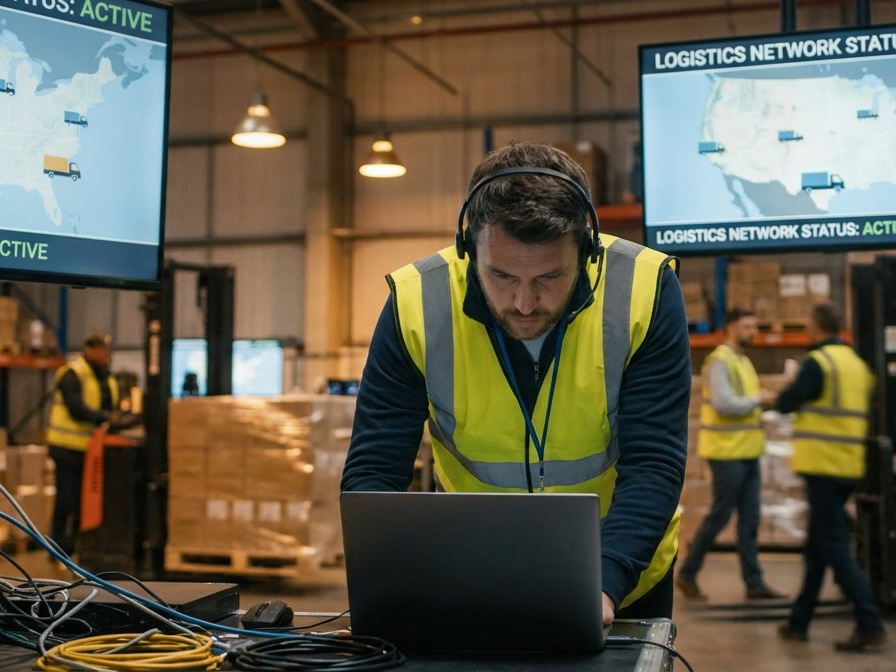
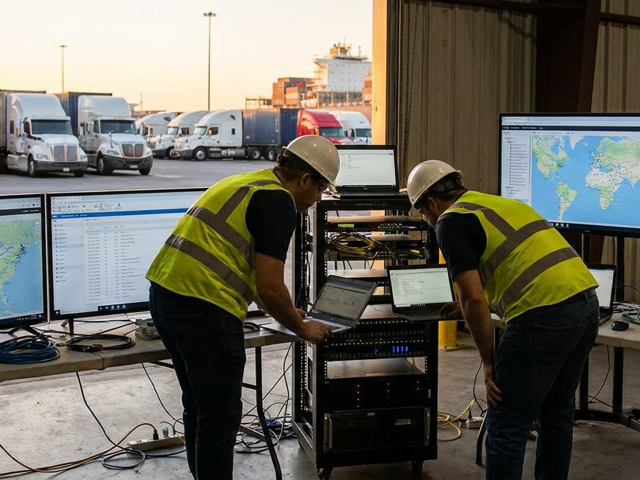
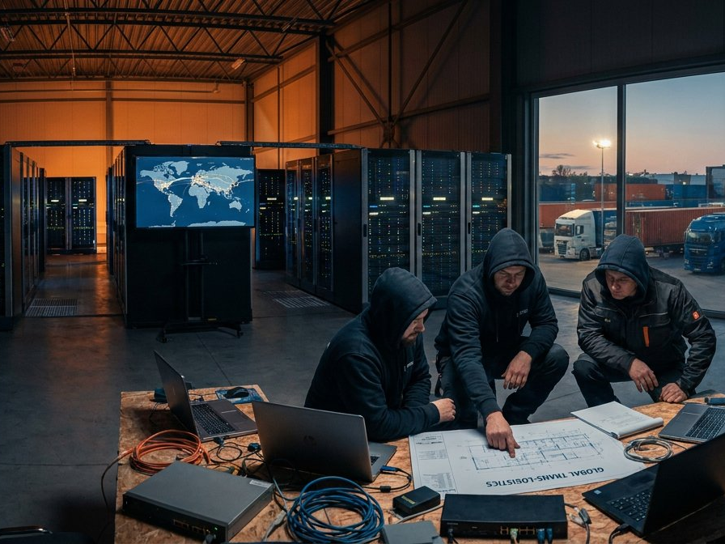

Logistics and transportation businesses rely on connected systems for inventory, dispatch, tracking, warehouse workflows and communication between teams. Network interruptions and cybersecurity incidents can disrupt schedules and delay deliveries.
DTCloudOn provides managed IT services, secure networking, cloud support and cybersecurity solutions for logistics companies throughout Texas. We help organizations improve system reliability, protect operational data and address technology issues that affect day-to-day operations.
Get specialized logistics IT support →
DTCloudOn helps logistics companies coordinate essential IT services across warehouses, offices and mobile teams. Cloud applications, secure remote access and reliable networks can support information sharing between dispatchers, drivers and distribution centers, depending on the systems used by your organization.

Connected logistics technology, including tracking platforms and telematics, can introduce additional cybersecurity and data-handling risks. Privacy, contractual and security obligations vary based on the organization's operations, customers and the information it processes.
DTCloudOn helps transportation and logistics organizations plan technical safeguards such as access controls, secure network configurations, data backup, monitoring and documented security processes. These measures can support applicable compliance efforts, but do not by themselves guarantee regulatory compliance.
Meet your compliance requirements →
Contact DTCloudOn to see how we can optimize and protect your logistics and transportation operations today.
Contact Us →Logistics and transportation companies often need managed IT support, secure networks, cloud services, device management, data backup and cybersecurity. The right mix depends on the organization’s warehouse systems, dispatch applications, mobile devices and operating requirements.
Cloud services can make business applications and operational information available to authorized employees across offices and mobile locations. With appropriate access controls and reliable connectivity, teams can share updates about inventory, dispatch and deliveries more efficiently.
Transportation businesses depend on connected networks, mobile devices and operational software. Cyber incidents can disrupt dispatch, expose sensitive information and interrupt communications. Security controls such as multifactor authentication, network protection, patching and backups help reduce these risks.
Preventive maintenance, network monitoring, reliable backups and timely technical support can help identify problems earlier and shorten disruptions. Although no IT provider can eliminate all downtime, a planned support approach can improve operational resilience.
IT providers can help implement access controls, secure data storage, backups, monitoring and documented technical procedures. Which regulations or contractual requirements apply depends on the business and the data involved; the organization remains responsible for determining and meeting its obligations.
Working with one managed IT provider for core support, network maintenance, cybersecurity and cloud administration can simplify coordination and create clearer points of contact, while allowing specialized vendors to remain involved where needed.
Secure remote access, mobile device management and cloud-connected applications help authorized staff work from different locations. The effectiveness of fleet connectivity also depends on mobile coverage, equipment and the applications used by drivers and dispatchers.
An IT provider familiar with warehouses, distribution operations and transportation workflows can help plan secure networks, prioritize critical systems and tailor support to the organization's business processes and uptime needs.
Talk to a DTCloudOn specialist who understands logistics and transportation — from cloud-connected fleets to supply chain compliance.
Request a Free Consultation →